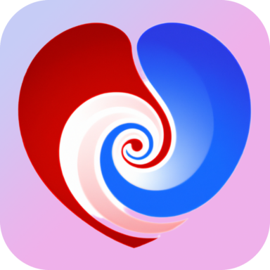
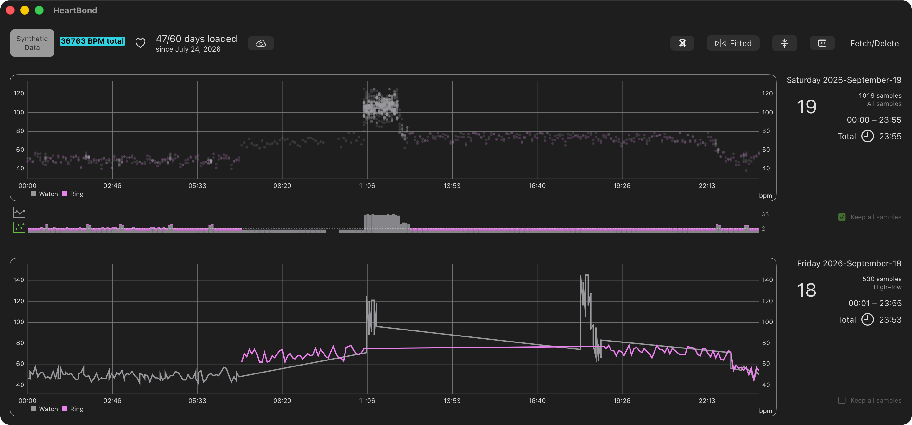

Heart rate graphing for Apple Health
Your Health Remastered
HeartBond reads the heart rate your Apple Watch, Oura Ring, and other Health sources already record, then draws each day as a graph. Open any date you want to return to, on iPhone, iPad, and Mac.
Plot every sample when you want fine detail. Or use the High–low line: the highest and lowest reading in each five-minute period.
Your data stays in Apple Health and your own iCloud account. HeartBond asks before it reads anything.

HeartBond on Mac. The upper day keeps all samples and plots Watch (grey) and Ring (magenta) as a point cloud. The lower day is the High–low line: the highest and lowest reading in each five-minute span.
The Synthetic Data chip means these traces are generated for the graph. They are not a person's Health record, so this page does not publish private heart data.
Private Data is the other environment. HeartBond asks before it reads Apple Health. Downloaded days sync through your own iCloud account. There is no HeartBond server holding them.
Get HeartBond
HeartBond is on the App Store for iPhone and iPad, and on the Mac App Store. Getting started walks through Health access, downloading days, iCloud, and Keep all samples.
What the app does
A graph you can read
Heart rate defaults to High–low: each five-minute bin plots its highest and lowest sample in bpm. That keeps many days on screen at once. Tick Keep all samples on a day to retain every reading of it instead.
How you look at the days
Days sit in one continuous list. Move through them in order, or pick a date and land on that row. The default drawing is a line. A day that keeps all samples can appear as a point cloud of every stored reading.
Health is the source
Samples come from the devices you have connected to Health, through Apple's HealthKit framework. HeartBond asks for access first and reads only what you allow. Apple Watch and Oura Ring are Health sources, not separate logins.
The same days on every device
Your downloaded days sync through your own iCloud account, so an iPhone, an iPad, and a Mac show the same history. A Mac that cannot fetch Health still receives days you download on iPhone or iPad.
Colors and graph size
Each device series can have its own color. You can expand or contract the graph's height and width, and switch between fitting the plot and filling the view.
We can help with
- Reading and understanding your heart rate data
- Syncing between your devices
- Customizing colors and graph sizes
- General questions about the app
Questions, concerns, or anything related to HeartBond can go on the GitHub Discussions page.